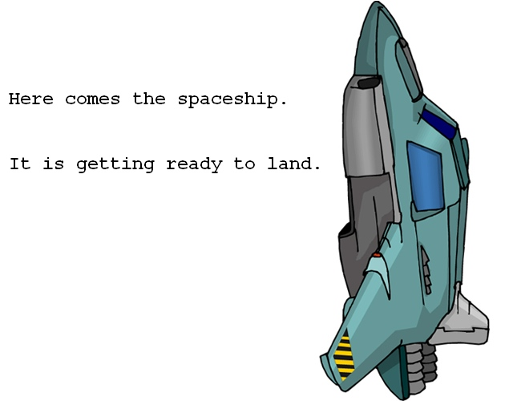
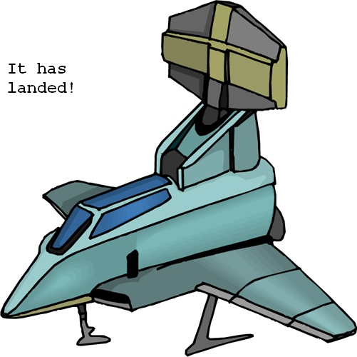
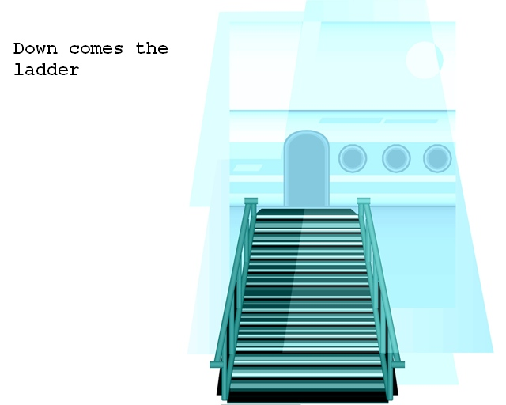
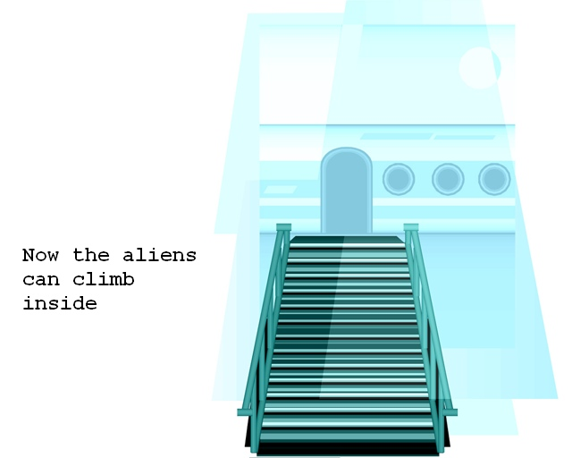
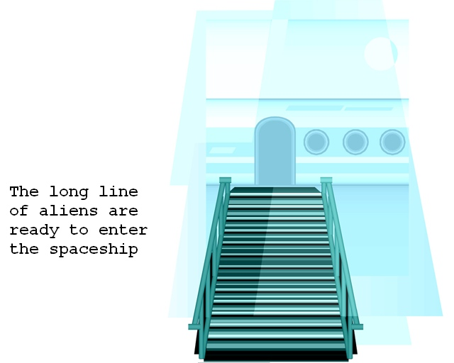
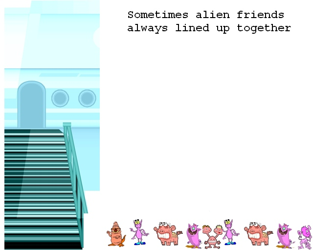
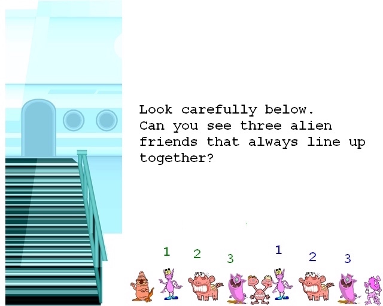
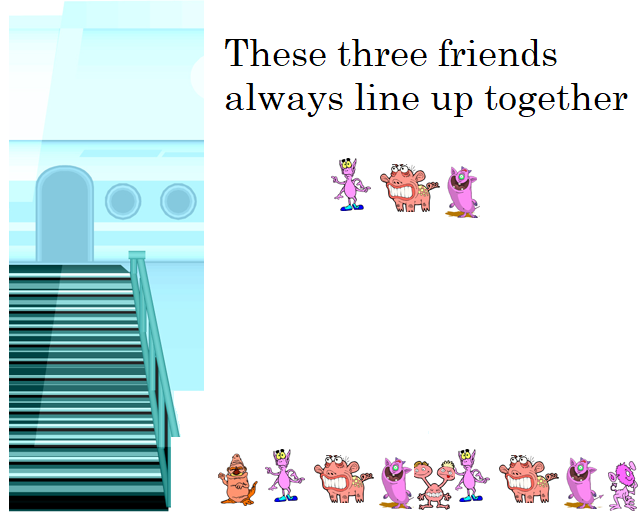
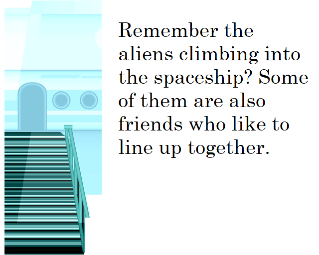
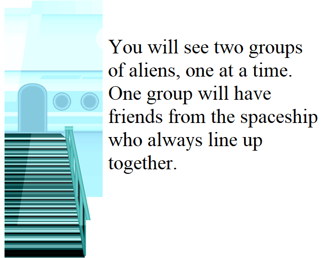

<!doctype html>
<html>
  <head>
  	<meta charset='utf-8'>

    <title>VSL</title>
    <script src="https://ajax.googleapis.com/ajax/libs/jquery/3.1.1/jquery.min.js"></script>
    <script src="jspsych-5.0.3/jspsych.js"></script>
    <script src="jspsych-5.0.3/plugins/jspsych-survey-text.js"></script>
    <script src="jspsych-5.0.3/plugins/jspsych-text.js"></script>
    <script src="jspsych-5.0.3/plugins/jspsych-single-stim.js"></script>
    <script src="jspsych-5.0.3/plugins/jspsych-audio-keyboard-response.js"></script>
    <script src="jspsych-5.0.3/plugins/jspsych-audio-keyboard-response.js"></script>
    <script src="jspsych-5.0.3/plugins/jspsych-call-function.js"></script>
    <script src="jspsych-5.0.3/plugins/jspsych-multi-stim-multi-response.js"></script>
    <link href="jspsych-5.0.3/css/jspsych.css" rel="stylesheet" type="text/css">

  </head>
  <body>

  </body>
  <script>
var ID =  JSON.stringify(jsPsych.data.getURLVariable('subject'));
console.log(ID);

var par_id = {
    type: 'survey-text',
    questions: ['Enter your participant ID'],
    timing_post_trial: 1000
};


String.prototype.format = function () {
    var i = 0, args = arguments;
    return this.replace(/{}/g, function () {
        return typeof args[i] != 'undefined' ? args[i++] : '';
    });
};

//If the targets in the exposure and the test phase need to be randomized between sujects, please use this line and comment out the line below.
//var cond_assign = jsPsych.randomization.sample(['lang1','lang2'],1)[0];

var cond_assign = 'lang2';

console.log(cond_assign);
var datetime = jsPsych.startTime();


if (cond_assign === 'lang1') {
    var targali = [3,6,9,12][Math.floor(Math.random()*4)];
} else if (cond_assign === 'lang2') {
    var targali = [13,17,20,24][Math.floor(Math.random()*4)];
}


var send_targali = {
    type: 'single-stim',
    stimulus: 'image/Alien{}.png'.format(targali),
    choices:['space'],
    timing_response: -1,
    response_ends_trial:true
};


var send_time = {
    type: 'call-function',
    func: function () {var datetime = jsPsych.startTime(); return datetime;}
};

var use_space = {
 type: 'audio-keyboard-response',
      stimulus: 'sound/instr_1.wav',
    prompt: "<p><center>Press the spacebar to begin.</center></p>",
    choices: ['space'],
    timing_response: -1,
    response_ends_trial: true
  };


var target_stim_choice = [
    function() {
    return "<p>Hi there, today you are going to see some aliens line up to enter a cool spaceship. " +
             "We need you to help us keep track of a very special alien as the aliens line up to enter their spaceship. " +
             "We'll show you the alien now.</p>"}
];

var target_alien = {
    type: 'audio-keyboard-response',
    stimulus: 'sound/vsl_instr1.wav',
    prompt: target_stim_choice[0],
    choices: ['space'],
    timing_response: -1,
    response_ends_trial: true
};

var vsl_instr1 = {
    type: 'audio-keyboard-response',
    stimulus: 'sound/vsl_instr2.wav',
    prompt: "" ,
    choices: ['space'],
    timing_response: -1,
    response_ends_trial: true
};

var vsl_instr2 = {
    type: 'single-stim',
    stimulus: 'image/Spaceship2.jpg',
    choices: ['space'],
    timing_response: -1,
    response_ends_trial: true
};

var vsl_instr3 = {
    type: 'audio-keyboard-response',
    stimulus: 'sound/vsl_instr3.wav',
    prompt: "",
    choices: ['space'],
    timing_response: -1,
    response_ends_trial: true
};

var vsl_instr4 = {
    type: 'audio-keyboard-response',
    stimulus: 'sound/vsl_instr4.wav',
    prompt: "",
    choices: ['space'],
    timing_response: -1,
    response_ends_trial: true
};

var vsl_instr5 = {
    type: 'audio-keyboard-response',
    stimulus: 'sound/vsl_instr5.wav',
    prompt: "",
    choices: ['space'],
    timing_response: -1,
    response_ends_trial: true
};

var vsl_instr6 = {
    type: 'audio-keyboard-response',
    stimulus: 'sound/vsl_instr6.wav',
    prompt: "",
    choices: ['space'],
    timing_response: -1,
    response_ends_trial: true
};

var target_stim_reminder = [
    function() {
    return "<p>Remember, this is the special alien to keep track of. The aliens will appear " +
             "one at a time on the screen as they line up. To keep track of our special alien press " +
             "the spacebar whenever you see it.</p>".format(targali);}
];

var target_alien_reminder = {
    type: 'audio-keyboard-response',
    stimulus: 'sound/vsl_instr7.wav',
    prompt: target_stim_reminder[0],
    choices: ['space'],
    timing_response: -1,
    response_ends_trial: true
};


if (cond_assign === 'lang1') {
var seq1=[1, 2, 3, 7, 8, 9, 10, 11, 12, 4, 5, 6, 7, 8, 9,
4, 5, 6, 10, 11, 12, 1, 2, 3, 4, 5, 6, 7, 8, 9, 10, 11, 12, 1,
2, 3, 10, 11, 12, 4, 5, 6, 7, 8, 9, 1, 2, 3, 10, 11, 12, 4, 5,
6, 1, 2, 3, 7, 8, 9, 1, 2, 3, 10, 11, 12, 4, 5, 6, 7, 8, 9, 10,
11, 12, 4, 5, 6, 1, 2, 3, 10, 11, 12, 7, 8, 9, 4, 5, 6, 10, 11,
12, 1, 2, 3, 7, 8, 9, 4, 5, 6, 10, 11, 12, 4, 5, 6, 1, 2, 3, 7, 8, 9,
10, 11, 12, 1, 2, 3, 4, 5, 6, 10, 11, 12, 7, 8, 9, 1, 2, 3, 4, 5,
6, 7, 8, 9, 1, 2, 3, 10, 11, 12, 1, 2, 3, 7, 8, 9, 4, 5, 6, 1,
2, 3, 7, 8, 9, 10, 11, 12, 4, 5, 6, 1, 2, 3, 10, 11, 12, 7, 8,
9, 4, 5, 6, 10, 11, 12, 4, 5, 6, 7, 8, 9, 1, 2, 3, 7, 8, 9, 10,
11, 12, 4, 5, 6, 1, 2, 3, 10, 11, 12, 4, 5, 6, 7, 8, 9, 1, 2, 3,
10, 11, 12, 4, 5, 6, 7, 8, 9, 1, 2, 3, 10, 11, 12, 4, 5, 6, 1, 2,
3, 10, 11, 12, 7, 8, 9, 4, 5, 6, 7, 8, 9, 10, 11, 12, 4, 5, 6, 1,
2, 3, 7, 8, 9, 4, 5, 6, 10, 11, 12, 1, 2, 3, 7, 8, 9, 1, 2, 3, 4,
 5, 6, 7, 8, 9, 10, 11, 12, 1, 2, 3, 7, 8, 9]
} else if (cond_assign === 'lang2') {
var seq1 = [2, 9, 4, 8, 3, 10, 2, 9, 4, 5, 12, 1, 11, 6, 7, 5, 12, 1,
2, 9, 4, 8, 3, 10, 11, 6, 7, 5, 12, 1, 8, 3, 10, 2, 9, 4, 8, 3,
10, 5, 12, 1, 2, 9, 4, 11, 6, 7, 8, 3, 10, 5, 12, 1, 11, 6, 7,
2, 9, 4, 11, 6, 7, 2, 9, 4, 5, 12, 1, 8, 3, 10, 11, 6, 7, 2, 9,
4, 5, 12, 1, 8, 3, 10, 5, 12, 1, 11, 6, 7, 2, 9, 4, 8, 3, 10, 11,
6, 7, 2, 9, 4, 5, 12, 1, 8, 3, 10, 5, 12, 1, 11, 6, 7, 8, 3, 10,
2, 9, 4, 8, 3, 10, 5, 12, 1, 11, 6, 7, 2, 9, 4, 11, 6, 7, 8, 3,
10, 5, 12, 1, 2, 9, 4, 8, 3, 10, 11, 6, 7, 5, 12, 1, 11, 6, 7, 2,
9, 4, 5, 12, 1, 8, 3, 10, 5, 12, 1, 11, 6, 7, 8, 3, 10, 2, 9, 4,
5, 12, 1, 11, 6, 7, 8, 3, 10, 11, 6, 7, 2, 9, 4, 5, 12, 1, 11, 6,
7, 2, 9, 4, 5, 12, 1, 8, 3, 10, 2, 9, 4, 8, 3, 10, 11, 6, 7, 5, 12,
1, 2, 9, 4, 11, 6, 7, 8, 3, 10, 5, 12, 1, 2, 9, 4, 11, 6, 7, 2, 9, 4,
5, 12, 1, 8, 3, 10, 5, 12, 1, 2, 9, 4, 8, 3, 10, 11, 6, 7, 2, 9, 4,
8, 3, 10, 11, 6, 7, 5, 12, 1, 11, 6, 7, 2, 9, 4, 8, 3, 10, 5, 12,
1, 8, 3, 10, 11, 6, 7]
}

// creates a javascript object that will be used in the for loop below
// this helps with defining the familiarizaiton block
var pics = [];
pics['1'] = 'image/Alien13.png';
pics['2'] = 'image/Alien14.png';
pics['3'] = 'image/Alien15.png';
pics['4'] = 'image/Alien16.png';
pics['5'] = 'image/Alien17.png';
pics['6'] = 'image/Alien18.png';
pics['7'] = 'image/Alien19.png';
pics['8'] = 'image/Alien20.png';
pics['9'] = 'image/Alien21.png';
pics['10'] = 'image/Alien22.png';
pics['11'] = 'image/Alien23.png';
pics['12'] = 'image/Alien24.png';
pics['13'] = 'image/blank.png';

// creates the familiarization block sequence to be fed into struct_block
// the structure must be {'stimulus': 'path/to/image.png'}
var img_block_1 = [];
for (var m=0; m<seq1.length; m++) {
    img_block_1.push({'stimulus': pics[seq1[m]]});
}

// this is the strucutred block
var struct_block = {
     type: 'single-stim',
     choices: ['space'],
     timeline: img_block_1,
     timing_response: 900,
     timing_post_trial: 100,
     response_ends_trial: false
};

// test phase instructions begin
var end_struck_block = {
  type: 'audio-keyboard-response',
  stimulus: 'sound/vsl_instr8.wav',
  prompt: 'Great job! Now we have a new task for you!',
  cont_key: ['space']
};

var vsl_instr9 = {
    type: 'audio-keyboard-response',
    stimulus: 'sound/vsl_instr9.wav',
    prompt: "",
    choices: ['space'],
    timing_response: -1,
    response_ends_trial: true
};

var vsl_instr10 = {
    type: 'audio-keyboard-response',
    stimulus: 'sound/vsl_instr10.wav',
    prompt: "",
    choices: ['space'],
    timing_response: -1,
    response_ends_trial: true
};


var vsl_instr11 = {
    type: 'audio-keyboard-response',
    stimulus: 'sound/vsl_instr11.wav',
    prompt: "",
    choices: ['space'],
    timing_response: -1,
    response_ends_trial: true
};

var vsl_instr12 = {
    type: 'audio-keyboard-response',
    stimulus: 'sound/vsl_instr12.wav',
    prompt: "",
    choices: ['space'],
    timing_response: -1,
    response_ends_trial: true
};

var vsl_instr13 = {
    type: 'audio-keyboard-response',
    stimulus: 'sound/vsl_instr13.wav',
    prompt: "",
    choices: ['space'],
    timing_response: -1,
    response_ends_trial: true
};


// more forced choice explanation
var forced_choiced_exp_cont = {
    type: 'audio-keyboard-response',
    stimulus: 'sound/vsl_instr14.wav',
    prompt: "<p>Sometimes they will be in the first group. Sometimes they will be in the second group. Each time, pick which group the friends are in.</p>",
    choices: ['space'],
    timing_response: -1,
    response_ends_trial: true
};


// sequence of images for the forced choice portion of the experimet
if (cond_assign === 'lang1') {
var seqc1 = [
    13, 1, 2, [3,0], 10, 2, 6, 13, 4, 8, [12,0], 4, 5, 6, 13,
    7, 11, [3,0], 1, 2, 3, 13, 1, 5, [9,0], 10, 11, 12, 13, 7,
    8, [9,0], 7, 11, 3, 13, 1, 2, [3,0], 4, 8, 12, 13, 1, 5, [9,0],
    10, 11, 12, 13, 4, 5, [6,0], 10, 2, 6, 13, 7, 8, [9,0], 4,
    8, 12, 13, 1, 5, [9,0], 4, 5, 6, 13, 10, 11, [12,0], 7, 11,
    3, 13, 10, 2, [6,0], 1, 2, 3, 13, 4, 5, [6,0], 4, 8, 12, 13,
    1, 2, [3,0], 1, 5, 9, 13, 7, 11, [3,0], 7, 8, 9, 13, 4, 8, [12,0],
    10, 11, 12, 13, 1, 2, [3,0], 10, 2, 6, 13, 7, 8, [9,0], 1, 5, 9,
    13, 4, 8, [12,0], 4, 5, 6, 13, 10, 11, [12,0], 10, 2, 6, 13, 7, 11,
    [3,0], 7, 8, 9, 13, 1, 5, [9,0], 1, 2, 3, 13, 10, 11, [12,0], 4, 8, 12,
    13, 7, 11, [3,0], 4, 5, 6, 13, 1, 5, [9,0], 1, 2, 3, 13, 10, 2, [6,0],
    7, 8, 9, 13, 10, 11, [12,0], 1, 5, 9, 13, 10, 2, [6,0], 4, 5, 6, 13,
    10, 11, [12,0], 4, 8, 12, 13, 7, 11, [3,0], 4, 5, 6, 13, 7, 8, [9,0],
    10, 2, 6, 13, 1, 2, [3,0], 7, 11, 3, 13
]
} else if (cond_assign === 'lang2') {
var seqc1 = [
13, 5, 3, [7, 0], 5, 12, 1, 13, 5, 3, [7, 0], 2, 9, 4, 13, 11, 6, [7, 0], 2, 6, 1, 13, 8, 12, [4, 0], 8, 3, 10, 13, 2, 9, [4, 0],	11, 9, 10, 13, 2, 6, [1, 0], 5, 12, 1, 13, 8, 12, [4, 0], 11, 6, 7, 13, 8, 3, [10, 0], 11, 9, 10, 13, 2, 6, [1, 0], 8, 3, 10, 13, 5, 12, [1, 0], 8, 12, 4, 13, 5, 3, [7, 0], 11, 6, 7, 13, 2, 9, [4, 0], 5, 3, 7, 13, 8, 3, [10, 0], 8, 12, 4, 13, 11, 9, [10, 0], 2, 9, 4, 13, 5, 12, [1, 0], 11, 9, 10, 13, 11, 9, [10, 0], 11, 6, 7, 13, 2, 9, [4, 0], 8, 12, 4, 13, 11, 6, [7, 0], 11, 9, 10, 13, 8, 12, [4, 0], 5, 12, 1, 13, 8, 3, [10, 0], 2, 6, 1, 13, 5, 12, [1, 0], 5, 3, 7, 13, 5, 3, [7, 0], 8, 3, 10, 13, 2, 6, [1, 0], 11, 6, 7, 13, 2, 9, [4, 0], 2, 6, 1, 13, 11,9,[10, 0], 8, 3, 10, 13, 2, 6, [1, 0], 2, 9, 4, 13, 11, 6, [7, 0], 5, 3, 7, 13, 11, 9, [10, 0], 5, 12, 1, 13, 11, 6, [7, 0], 8, 12, 4, 13, 8, 12, [4, 0], 2, 9, 4, 13, 8, 3, [10, 0], 5, 3, 7, 13, 5, 12, [1, 0], 2, 6, 1, 13
]
}


// creats the array of images to be show for the focrced choice
// since it is zero indexed, the first image is just a blank screen
// the order in the seq2 variable should reflect this
// the order in seq2 should also build in the fact that every 7th stimulus will not be presented
var img_block_2 = [];
for (ii=0; ii<seqc1.length; ii++) {
    if (ii % 7 === 0 && ii !== 0 && seqc1[ii] === 13) {
        img_block_2.push({'stimulus': '',
                          'prompt': 'If the first three aliens were a group of friends that always lined up together to enter the spaceship, press 1; If the second three aliens were a group of friends that always lined up together to enter the spaceship, press 2',
                          'choices': ['1','2'],
                          'timing_response': 1600000000,
                          'timing_post_trial': 200,
                          'response_ends_trial': true});
    } else if (ii === 0) {
        img_block_2.push({'stimulus': '',
                          'prompt': '',
                          'choices': ['1','2'],
                          'timing_response': 200,
                          'timing_post_trial': 200,
                          'response_ends_trial': false});

    } else if (seqc1[ii][1] === 0){
        img_block_2.push({'stimulus': pics[seqc1[ii][0]],
                          'response_ends_trial': false,
                          'timing_response': 796,
                          'timing_post_trial': 1000});

    } else {
        img_block_2.push({'stimulus': pics[seqc1[ii]],
			  'response_ends_trial': false,
			  'timing_response': 796,
			  'timing_post_trial': 200});

   }
}


// create the forced choice block
var forced_choice_block = {
     type: 'single-stim',
     timeline: img_block_2,
     timing_response: 796,
     timing_post_trial: 200,
     response_ends_trial: false
};


var end = {
type: 'audio-keyboard-response',
    stimulus: 'sound/end_instr.wav',
    prompt: "Great!",
    timing_response: 1000,
    trial_duration: 1000,
    response_ends_trial: true,
};

var timeline = [];
 if (ID == null | ID == "null" | ID == 'undefined') { timeline.push(par_id);}
timeline.push(send_time);
timeline.push(use_space);
timeline.push(target_alien);
timeline.push(send_targali);
timeline.push(vsl_instr1);
timeline.push(vsl_instr2);
timeline.push(vsl_instr3);
timeline.push(vsl_instr4);
timeline.push(vsl_instr5);
timeline.push(vsl_instr6);
timeline.push(target_alien_reminder);
timeline.push(struct_block);
timeline.push(end_struck_block);
timeline.push(vsl_instr9);
timeline.push(vsl_instr10);
timeline.push(vsl_instr11);
timeline.push(vsl_instr12);
timeline.push(vsl_instr13);
timeline.push(forced_choiced_exp_cont);
timeline.push(forced_choice_block);
timeline.push(end);


jsPsych.data.addProperties({
        cond: cond_assign,
        targ: 'alien{}'.format(targali),
        ts: datetime
});

// From https://github.com/CrumpLab/jspsychr/blob/master/inst/rmarkdown/templates/jspsychr/skeleton/experiment/jspsychr/jspsychr.js
  var jspsychr = {};
  jspsychr.save_locally = function(filename) {
    var data = jsPsych.data.dataAsCSV();
    var file = filename;
    var xhr = new XMLHttpRequest();
    xhr.open('POST', 'submit');
    xhr.setRequestHeader('Content-Type', 'application/json');
    xhr.send(JSON.stringify({filename: file, filedata: data}));
  };


jsPsych.init({
    timeline: timeline,
    fullscreen: false,
    on_finish: function save_data(){
    if (ID == null | ID == "null" | ID == 'undefined') {
   	ID = jsPsych.data.getTrialsOfType('survey-text')[0].responses.match(/[a-zA-Z0-9]/g).join('').split(/Q0/)[1];

    jsPsych.data.addProperties({
            part_id: ID
          });
   	}

    var filename = "{}_vsl.csv".format(ID);
    jspsychr.save_locally(filename);


  setTimeout(function() {
      return window.location.replace('./continue.html');
    }, 1500)


   }
});
</script>
</html>
